セッション情報
| 項目 | 内容 |
|---|---|
| タイトル | Clues and Camping in ‘Ghost of Yōtei’: Curating Guided Exploration Through a Non-Linear Open World |
| スピーカー | Samuel Holley (Sucker Punch Productions) |
| トラック | Design, Narrative & Performance |
| 形式 | Lecture |
| 日時 | 2026年3月12日（木）10:30–11:30 |
| 場所 | Room 2005, West Hall |
Part 1: イベントデッキの仕組み
イベントデッキシステムの概要
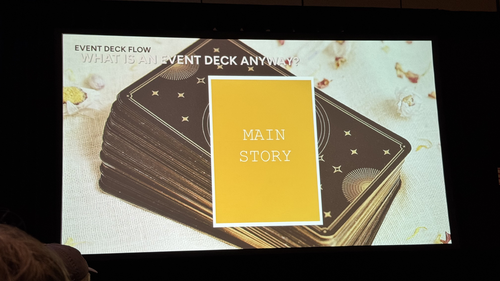
世界はディーラーで溢れている。ディーラーはイベントデッキからカードを引き、その情報を使って現在の状況に最も適切なものを選んで提供する。
イベントデッキとは、カードデッキ方式で非線形オープンワールドのガイド付き探索を実現するシステムだ。デッキは理想的なフローを線形に定義し、シャッフルせずリセットする。
ディーラー = あらゆるインタラクションポイント
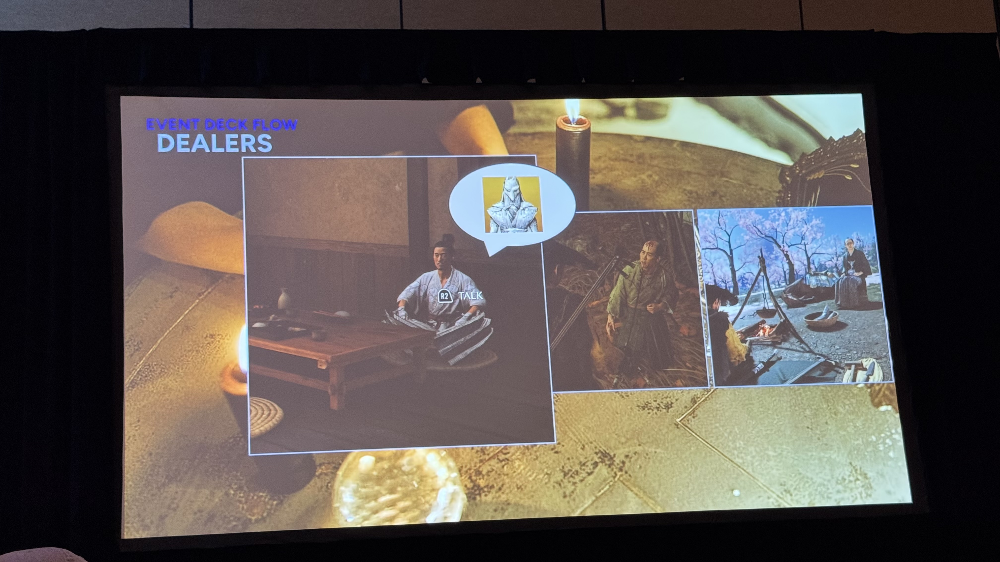
ディーラーとは、ワールド内のインタラクション可能な存在（NPC、掲示板、キャンプ、敵など）のこと。プレイヤーが接触するとイベントデッキからカードを引いて適切なイベントを提供する。
黄金の秘訣 その1: 多様なプレイスタイルへの対応
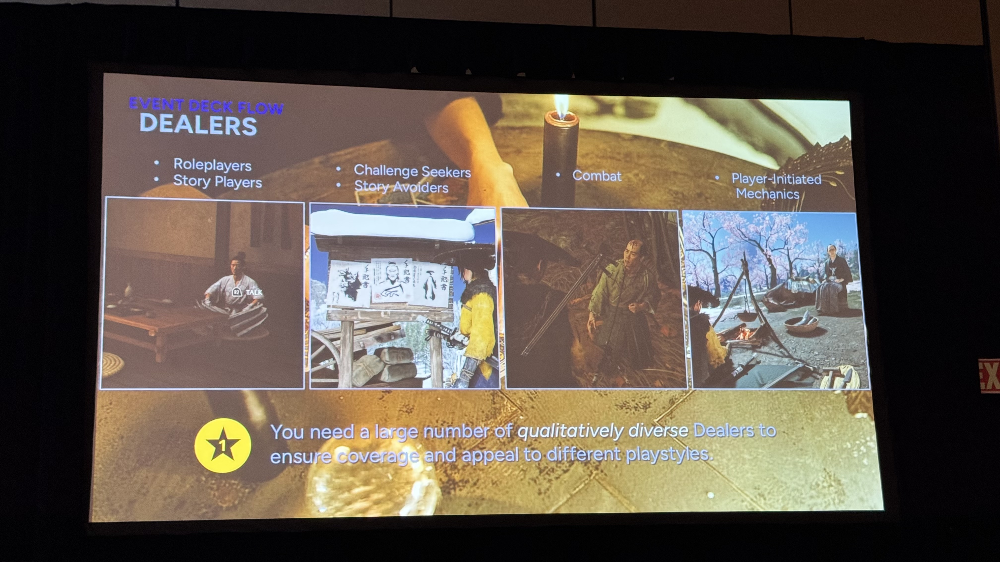
特にオープンワールドゲームでは、プレイヤーはそれぞれ異なるプレイスタイルを持っている。NPCと話すのが好きな人ばかりではない。キャンプをたくさんするのが好きな人ばかりでもないが、誰もがこれらのうちいくつかはやる。
すべてをディーラーに変えることができれば、イベントデッキがプレイスタイルに関係なくすべてのプレイヤーに届くようにできる。
デッキの仕組み: 4枚カードの例
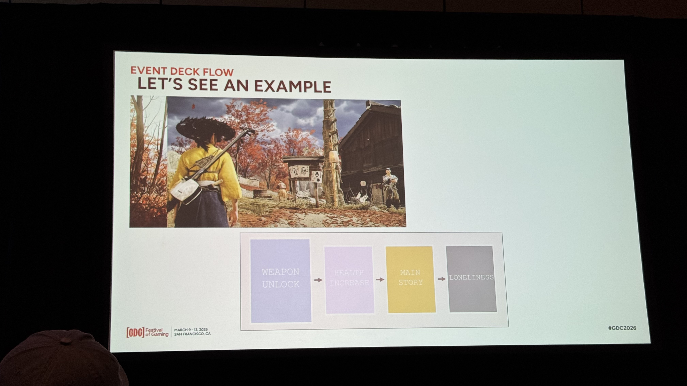
- プレイヤーが集落の賞金首掲示板に近づく → 武器アンロック カードが引かれる
- 酒場の浪人に話しかける → 体力増加 カードが引かれ、温泉への地図をもらう
- 戦闘後、敵を取り調べる → メインストーリー カードが引かれ、OTA6の居場所を聞き出す
- 十分な時間が経過 → 孤独 カードが発動し、デッキがリセットされる
黄金の秘訣 その2: 「何もしない」余白をデッキに入れる
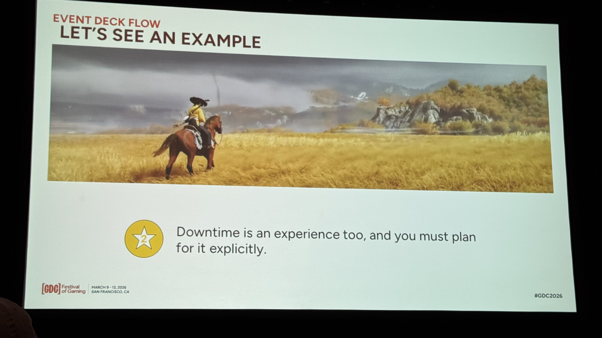
“Downtime is an experience too, and you must plan for it explicitly.”
「孤独」カードは特別なカードで、デッキの中に「何もしない」ための明確なスペースを確保する。『対馬（Tsushima）』のときのようにプレイヤーにやることを山積みにしない。日本の辺境をさまよい、自分の馬だけが唯一の相棒——それはエモーショナルターゲットだ。
緊急カードの仕組み
デッキは常に変化し続ける。特定の条件が満たされると、カードがデッキの先頭にジャンプする。例えば「体力増加」カードはデッキの真ん中にあるが、最大体力が他の進行度に対して遅れていると判断されたら、緊急カードとしてデッキの先頭にジャンプする。
黄金の秘訣 その3: 伝えることのコストを意識する
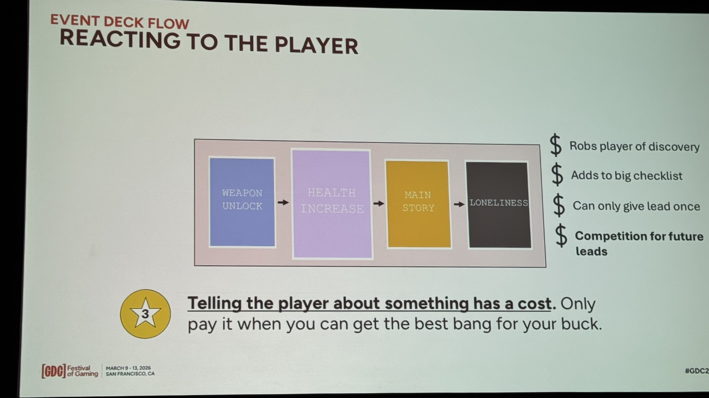
“Telling the player about something has a cost.”
プレイヤーに何かを伝えることにはコストがある:
- 自分で発見する喜びを奪う
- やることリストにもう1つ項目が追加される
- 伝えることすべてが、次に伝えることとの競争になる
コストが高い場合は計画に固執せず、プレイヤーが未完了のものを終えるか新しいリージョンに入るまでカードをスキップする。
システミック・エンカウンター
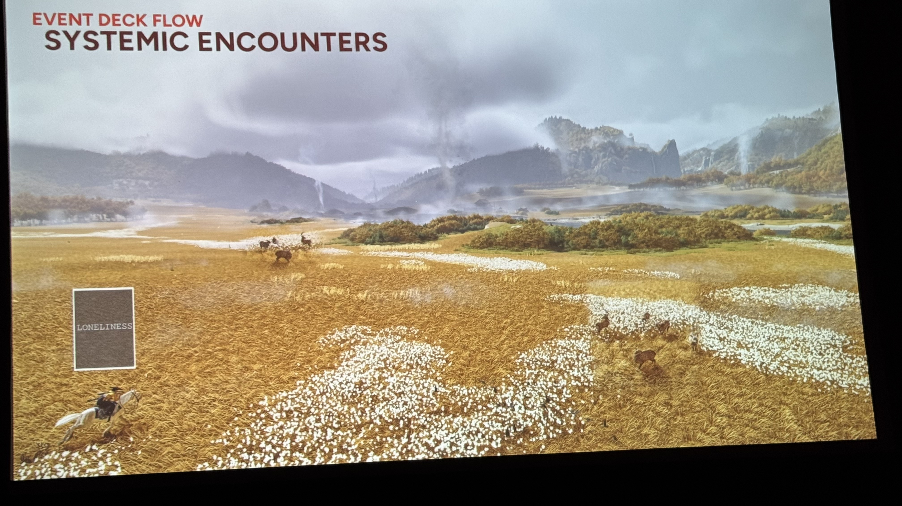
作り込みコンテンツの間の空白を埋めるシステム。イベントデッキを参照してスポーン内容を決定する。「孤独」カード時は動物のみスポーンし、意図的な空虚感を演出する。
Part 2: Dealer Deep Dives
取り調べ（Interrogation）
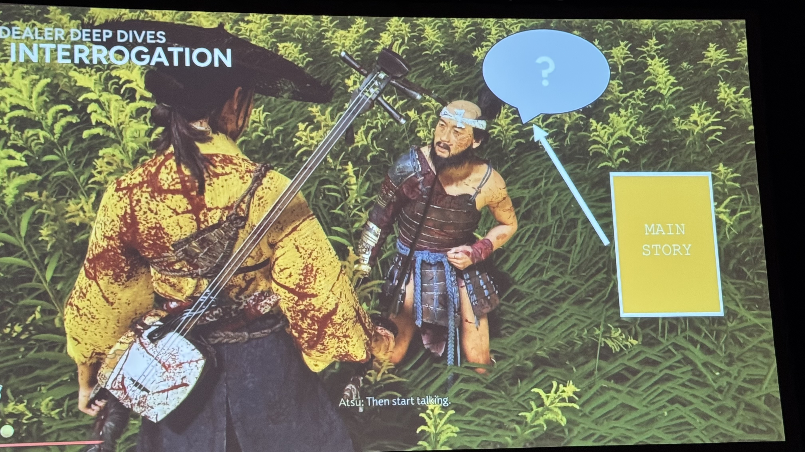
イベントマスターリストは全イベントを定義した巨大テキストファイル。カードから具体的イベント（オーディオ、アニメ、テキスト）への変換テーブルとして機能する。
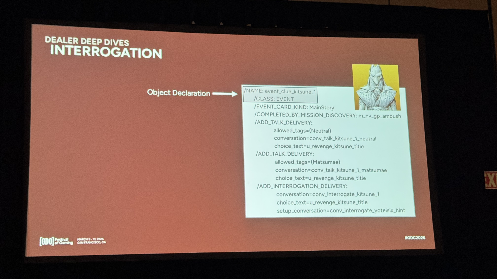
デリバリーシステムにより、同じイベントを複数の配信方法（talk / interrogation 等）で届けられる。ディーラーごとに対応するデリバリーが異なる。
キャンプサイト訪問者（Campsite Visitor）
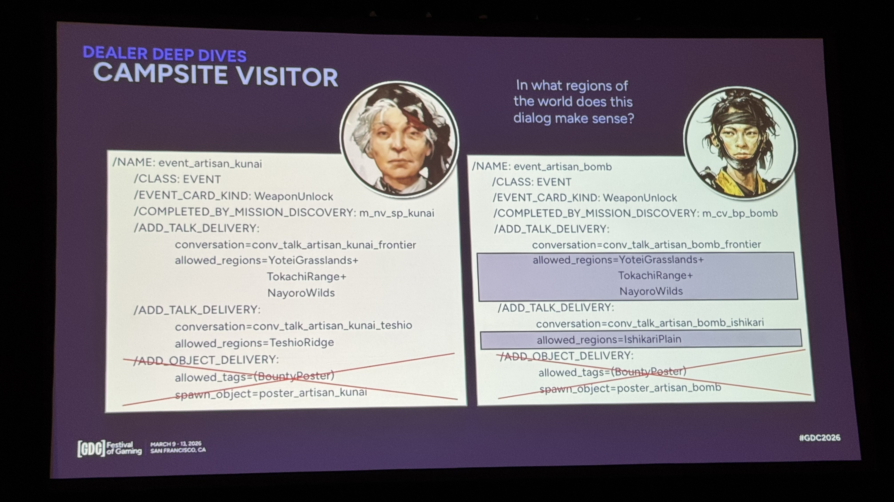
リージョンルール（allowed_regions）により、デリバリーに地域制約がある。プレイヤーの現在地域に合う情報のみ提供し、遠い地域の情報はフィルタされる。
黄金の秘訣 その4: 場所に紐づかないディーラー
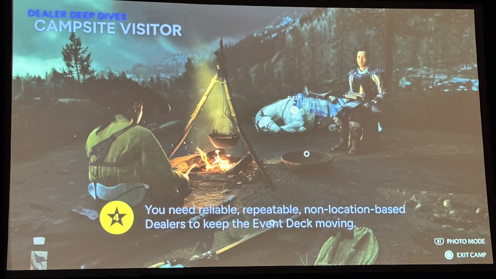
“You need reliable, repeatable, non-location-based Dealers to keep the Event Deck moving.”
キャンプサイトのような場所に紐づかないディーラーは極めて価値が高い。プレイヤーが自発的にエンゲージし、どこでも発動し、デッキの枯渇を防ぐ。
Non-Linear Linearity（非線形な線形性）
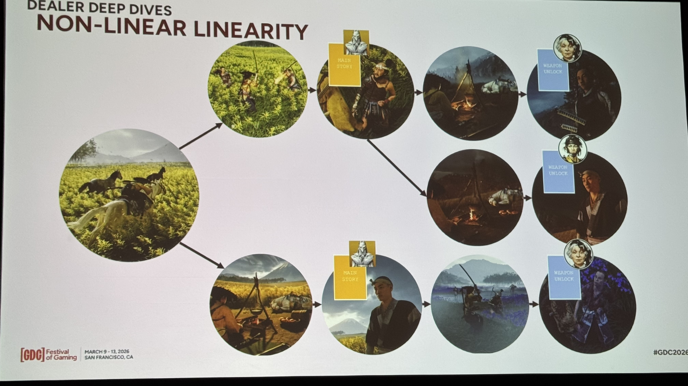
非線形なプレイヤー行動 × 線形なデッキ計画の融合。どの順序で何をしても、デッキは同じシーケンスのカードを異なるディーラー＋デリバリーで自然に届ける。
黄金の秘訣 その5: ナラティブの一貫性
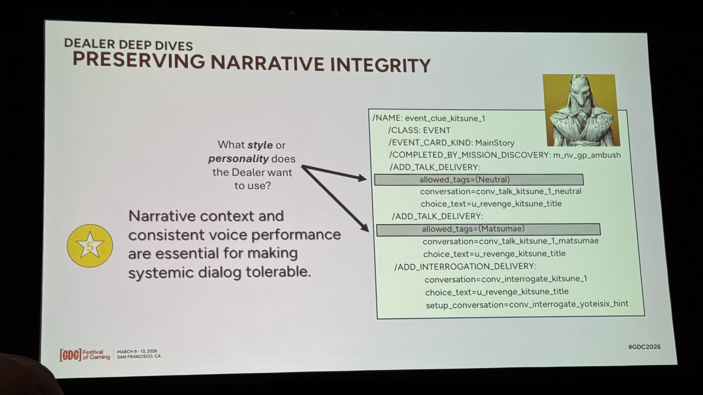
“Narrative context and consistent voice performance are essential for making systemic dialog tolerable.”
allowed_tagsでキャラクターごとにセリフを差別化しイマージョン維持。開拓者は「精霊」、松前藩侍は「ロシア人」と同じ情報でも語り方が異なる。
V.O. Recording: レシピのスペクトラム
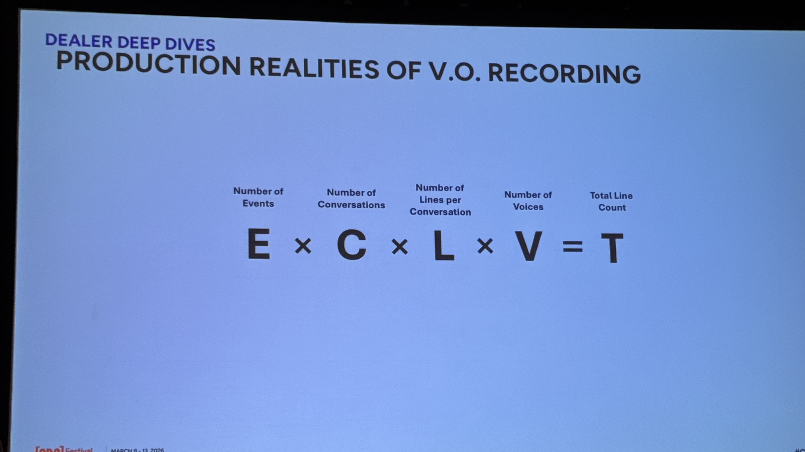
計算式: E × C × L × V = T（イベント数 × 会話数 × 行数/会話 × ボイス数 = 総行数）
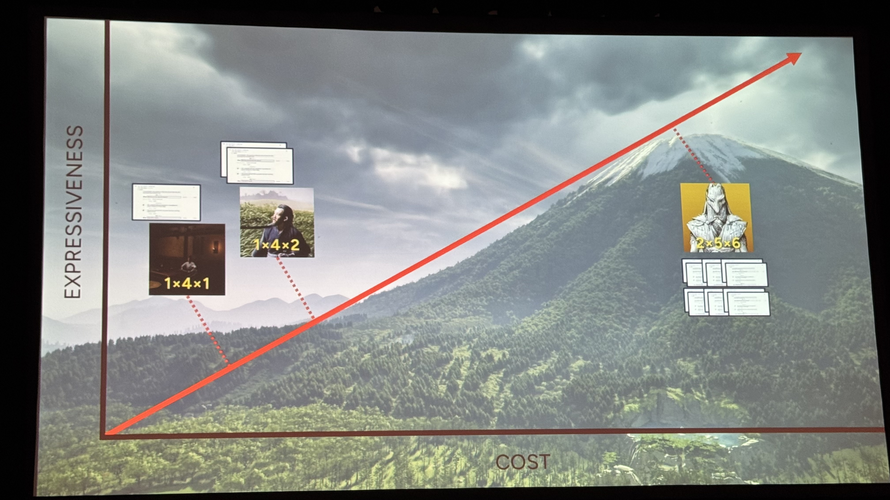
| レシピ | 用途 | コスト |
|---|---|---|
| 2×5×6 | OTA6メインストーリー | 高（全体の10%以下） |
| 1×4×2 | 取り調べ | 中 |
| 1×4×1 | キャンプ訪問者・環境NPC | 低（全体の90%以上） |
VA×16キャラ戦略: 1人のボイスアクターが16マイナーキャラを演じ、スケーラブルな配信を実現。
Part 3: Benefits & Shortcomings
メリット
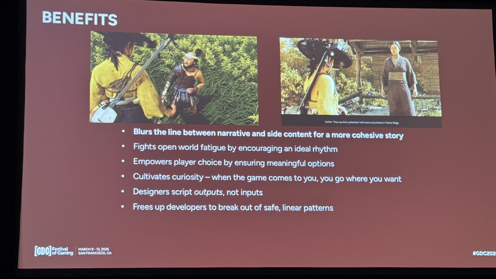
- 非線形設計の自由度 — 開発者が安全な線形パターンから脱却できる
- 出力ベースの設計 — デザイナーは入力ではなく出力を記述する。カード並び替えでペース制御
- 好奇心の醸成 — ゲームがプレイヤーのところに来るので、自由に行きたい場所に行ける
- プレイヤー選択の強化 — カードスキップにより常に意味のある選択肢を保証
- オープンワールド疲労の対策 — 理想的なリズムを奨励し、同じ体験の連続を防ぐ
- ナラティブとサイドコンテンツの統合 — ストーリーとメカニクスの境界をぼかし、より一貫した物語を作る
欠点
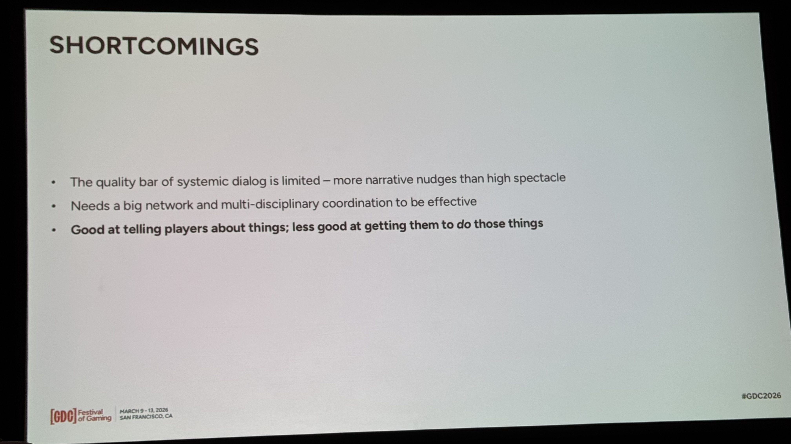
- システミック・ダイアログの品質限界 — ナラティブのナッジは得意だが、大きな感情的イベントには不向き
- 大規模な投資 — 多数のディーラーと多部門連携が必要
- 伝えることは得意だが、実行させることは苦手 — リード→行動の相関は約75%
- ダイアログへの過度な依存 — イベント配信が会話に偏りがち。次回はオブジェクト・デリバリーにもっと投資したい
結論
メリットは欠点を上回る。イベントデッキは全員を同じ道に強制するのではなく、プレイヤーが気に入りそうな方向にそっと押す（ナッジ）。多くの欠点は次回のイベントデッキで改善可能。
5 Golden Secrets まとめ
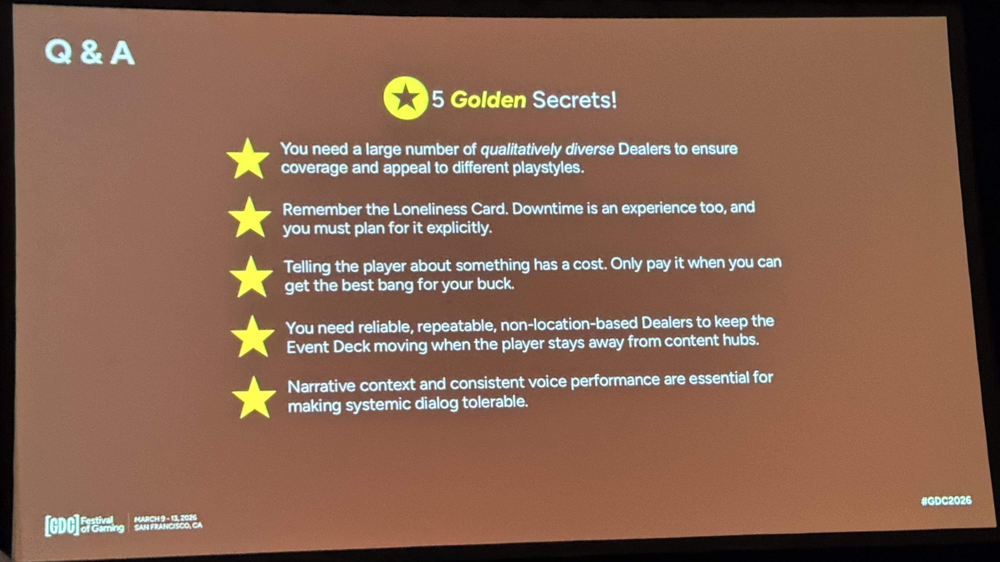
| # | Golden Secret |
|---|---|
| ★1 | 質的に多様なディーラーでカバレッジを確保し、異なるプレイスタイルに訴求する |
| ★2 | 孤独カードを忘れるな。ダウンタイムも体験であり、明示的に計画すべき |
| ★3 | プレイヤーに何かを伝えることにはコストがある。最大の効果が得られるときだけ払え |
| ★4 | 場所に紐づかない信頼性の高いディーラーで、プレイヤーがコンテンツハブから離れてもデッキを回し続ける |
| ★5 | ナラティブの文脈と一貫したボイスパフォーマンスが、システミック・ダイアログを許容可能にする鍵 |
全トランスクリプト要約（46項目）
Part 1: イベントデッキの仕組み
- ディーラー: ワールド内のインタラクション可能な存在。プレイヤーが接触するとイベントデッキからカードを引いて適切なイベントを提供
- イベントデッキ: カードデッキ方式で理想的なフローを線形に定義。シャッフルせずリセットする
- 黄金の秘訣 その1: あらゆるインタラクションポイントをディーラー化し、どのプレイスタイルでもイベントが届くようにする
- 黄金の秘訣 その2: 「孤独」カードで「何もしない」余白をデッキに確保する
- 緊急カード: 進行バランスが崩れた場合、該当カードがデッキ先頭にジャンプして自動補正する
- 黄金の秘訣 その3（最重要）: 伝えることにはコストがある。すでに類似情報を知っている場合はカードをスキップする
- ダンジョンマスターとしてのデッキ: 計画を持ちつつプレイヤーの変化に適応
- システミック・エンカウンター: イベントデッキを参照してスポーン内容を決定。「孤独」カード時は動物のみスポーン
Part 2: Dealer Deep Dives
- イベントマスターリスト: 全イベントを定義した巨大テキストファイル
- 取り調べの条件分岐: デッキにカードがあれば取り調べ発生、「孤独」カードのみなら敵はただ死ぬだけ
- デリバリーシステム: 同じイベントを複数の配信方法で届けられる
- イベント選択: 複数の有効イベントがある場合は最初に見つかったものを採用
- キャンプサイト = ディーラー: フェードイン/アウト時にデッキからカードを引く
- Object Delivery: 会話ではなくオブジェクトをスポーンするデリバリータイプ
- リージョンルール: デリバリーに地域制約があり、プレイヤーの現在地域に合う情報のみ提供
- キャンプサイト訪問者フロー: カード → マスターリスト → リージョンフィルタ → NPC選択 → 会話再生
- 黄金の秘訣 その4: 場所に紐づかないディーラーがデッキの枯渇を防ぐ
- 反省点: キャンプの価値に気づくのが遅く、キャンプに過度依存
- 核心メッセージ: 非線形なプレイヤー行動 × 線形なデッキ計画の融合
- 黄金の秘訣 その5: allowed_tagsでキャラクターごとにセリフを差別化
- コストの現実: 高コストだがイマージョン維持に不可欠
- VA×16キャラ戦略: 1人のVAが16マイナーキャラを演じる
- レシピのスペクトラム: E×C×L×V=T
- 90/10の法則: 安いレシピが90%以上、高いレシピは最重要イベントのみ
Part 3: Benefits & Shortcomings
- メリット1: 非線形オープンワールド設計の自由度
- メリット2: 出力ベースの設計
- メリット3: プレイヤーの選択を強化
- メリット4: 活動の多様性リズム
- メリット5: 世界の繋がりとリアリティ
- メリット6: ストーリー/メカニカル両プレイヤーへの訴求
- 欠点1: 大きな感情的イベントには不向き
- 欠点2: 大きな投資が必要
- 欠点3: 伝えることは得意だが行動は保証できない（相関約75%）
- 欠点4: ダイアログへの過度な依存
- 結論: メリットは欠点を上回る。次回で改善可能